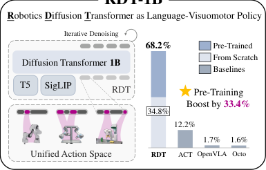
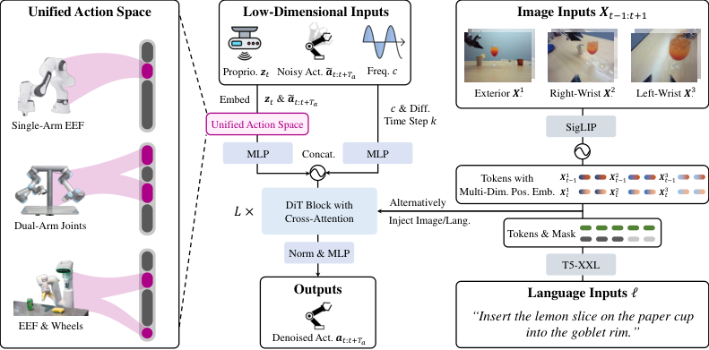
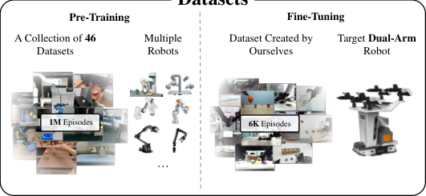

💡速记层 · 思想 / 逻辑 / 方法
默认读完就走的一层——只讲思想、逻辑、方法；效果只作验证。要核对原文/钻细节再看下面的「深读层」。
- 双臂操作 = 双倍动作空间 + 多个等效完成方式 → 动作分布天然多峰；均值回归（deterministic mapping）产生「各峰平均值」→ 不可行动作。
- 扩散模型建模整条分布 \(p(a|\ell, o)\)，天然处理多模态；低维动作（vs. 图像）采样开销可接受。
- 但双臂数据 < 10K 轨迹——扩散模型需要大量数据。解法：迁移单臂/多机器人预训练数据（扩大三个数量级）。
- 直接拼接异构动作会产生负迁移（各机器人物理量单位/含义混乱）。→ 设计按物理含义对齐的128 维统一动作空间，各维度对应真实物理量。
- 在此空间预训 1.2B 参数 DiT，再在 6K+ 双臂数据上微调 → 零样本/少样本泛化。
在 7 个真机任务上全面超越 ACT / OpenVLA / Octo；特别是预训练给成功率带来 +33.4% 绝对提升，且 1~5 shot 即可学会全新技能。
想看具体数字（点开）
- RDT (ours) 整体超越 baselines 56% 成功率提升。
- Wash Cup（未见杯子）：RDT 50%，ACT 0%，OpenVLA 0%，Octo 0%。
- Pour Water（未见房间）：RDT 62.5%，ACT 12.5%，Octo 4%。
- Fold Shorts（1-Shot）：RDT 68%，ACT 0%，OpenVLA 0%。
- Robot Dog（精细操控）：RDT Walk Straight 48%，ACT 32%，OpenVLA 0%，Octo 0%。
- RDT (scratch) 无预训练时 Wash Cup 总成功率仅 12.5%；预训练后 50%。
Track A（移动操作 / 双臂 VLA）强相关：RDT-1B 是目前最大的扩散型双臂 VLA，统一动作空间设计对人形机器人等多自由度平台有直接参考价值；预训练→微调范式和跨机器人数据利用策略可直接借鉴。Track B（足式先进算法）基本不相关——本文专注操作，不涉及 locomotion / RL。
◆核心观点 · 证据
每条 = 中文论点 + 📍页/节 + 🔤逐字原文(Ctrl-F 锚点) + 🀄译文 + 💡解读。
Bimanual manipulation is essential in robotics, yet developing foundation models is extremely challenging due to the inherent complexity of coordinating two robot arms (leading to multi-modal action distributions) and the scarcity of training data.
the available data for a specific dual-arm robot is particularly scarce (< 10K trajectories) due to high hardware costs, far from the common requirement to train a foundation model.
The policy will learn the "average" of action modes if we model it as a deterministic mapping (ℓ, ot) 7→at and regress the tuples of (ℓ, ot, at) in the training data. This may result in out-of-distribution actions, such as the arithmetic mean of multiple modes, which can be completely infeasible.

robotic physics quantities are characterized by its nonlinear dynamics and the potential for high-frequency changes stemming from the physical interactions, such as collision, constraints, and material properties like damping. Moreover, the quantities also feature an unstable numerical range, probably due to extreme values caused by unreliable sensors.
we strategically alternate between injecting image and text tokens in successive layers' cross-attention rather than injecting both in every layer.

we need a unified action space shared among various robots to provide a unified format for multi-robot actions. The mapping from the original action space of a robot to the unified action space should be physically interpretable, and each dimension of the space should have a clear physical meaning. This can encourage the model to learn shared physical laws from different robot data, thereby improving the efficiency of learning from data of different robots.
This unified action space has a dimensionality of 128. Table 4 describes each element of the vector in this unified action space. For a specific robot, each element of the raw action vector is filled into the corresponding position of the unified action vector according to its physical meanings, with the remaining positions being padded.
our collection of pre-training datasets includes 46 datasets of various robots, with a total size of 1M+ trajectories and 21TB, making it the largest pre-training collection of robotics datasets to date.

we have collected 6K+ trajectories, making our dataset one of the largest bimanual datasets nowadays; Regarding comprehensiveness, we consider 300+ challenging tasks, covering most manipulation task types, from pick-and-place to plugging cables, even including writing math equations
Large model size, extensive data, and diffusion are all essential factors for our excellence. In Table 2, there is a serious performance drop without any of these factors, demonstrating the necessity of our contributions.
RDT has learned new and complex skills of handover and folding through few-shot learning, whose action patterns are very different from known skills, while the success rate of others is almost zero. Such improvement is also due to large-scale pre-training. Few-shot learning can help RDT quickly adapt to new working environments, which is of great significance for practical applications.
we adopt DPM-Solver++, a recent sampling accelerator of diffusion models. It can reduce the diffusion steps required to sample an action chunk from 100 steps to 5 steps, achieving an action chunk inference frequency of 6 Hz (action chunks per second) and an average action inference frequency of 381 Hz (actions per second) on the target robot's onboard RTX 4090 24GB GPU.
⎘开源状态
论文在 Reproducibility Statement 中明确声明全部开源，包括代码、权重和微调数据集。
- 代码
- 已开源 github.com/thu-ml/RoboticsDiffusionTransformer（训练/推理/部署；PyTorch）
- 模型权重
- 已开源 HuggingFace: rdt-1b（1.2B 参数预训练 + 微调权重）
- 微调数据集
- 已开源 6K+ 双臂轨迹，含 300+ 任务（项目页面可下载）
- 预训练数据
- 部分 46 个数据集中多数本已公开（OXE/RT-1/DROID/RH20T 等），自采部分未单独释出
We have fully open-sourced all our code, model weights, and fine-tuning datasets. We refer to the project page for more information.
⚖批判 · 评级
① 「物理可解释统一动作空间」是一个具有普遍性的设计思路——任何面临跨机器人/跨自由度迁移的工作都可借鉴。② 在双臂操作上用扩散模型处理多模态分布的动机论证清晰，且有严格消融实验支撑三项结论（扩散建模 / 大规模 / 预训练各自的贡献）。③ 1.2B 参数、完全开源（代码+权重+数据），是目前双臂操作领域最强的可复现 baseline。④ 1-shot / 5-shot 学新技能的结果令人信服——Fold Shorts 1 demo 即达 68%。
① 评测均在固定平台 ALOHA 双臂机器人上进行，移动操作 / 人形应用需要额外验证。② 预训练数据虽宣称 1M+ 轨迹，但各数据集采样权重差异巨大（RT-1 占 9%，部分数据集仅 0.03%），实际质量分布不透明。③ 微调数据 6K+ 轨迹仍是人工遥操作采集，在真正「零样本」到全新真实场景时（如不同机器人形态）性能未在论文中测试。④ DPM-Solver++ 5步推理虽然够用，但 1.2B 参数模型在边缘端的部署成本不低。⑤ 「最大扩散型基础模型」的说法以 Octo(93M) 为参照——若与后续更大模型比较，这一定语快速过期。
评级：Important 在双臂操作方向具有显著贡献——统一动作空间的设计思路和大规模扩散预训练的路线有较强影响力；但场景局限于固定双臂机器人，尚未跨越到移动操作或人形。